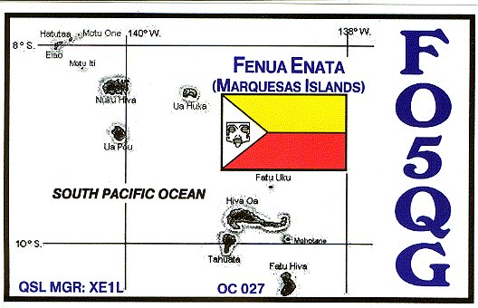

9M0C Spratly Is
【Back Issues June.98】
30.Jun.98
(10:00) (JT1CJ 01:40 50.110 SSB) JT1KAA 03:17 50.110 CW/SSB UA0CQ 08:30 50.119 CW ◎ 西方面からのTVのバズと共に03:17zにJT1KAAのCWのCQが入感。 CQの連発でJAから応答する局は少 ない。 03:25z頃からSSBでQRVしていたが1エリアでは03:45zにはF.OUTした。 これより先の01:40z頃 に2エリアでQSOしていたJT1CJ(JT1KAAと同じ所？)は1エリアでは聞こえなかった。29.Jun.98
(10:00) HL1LTC 01:27 50.110/120 SSB/AM HL5XF 07:30 50.110/132 SSB HL1ACW 08:13 50.175 SSB (UA0CQ 08:25 50.096 CW) ◎ 日中は相変わらず西方面からのTV(49.750MHz)が強力。ただし入感DXはHL'sだけ。 08:00z過ぎに JA4でリポートのあったUA0CQ(50.096MHz)は、1エリアでは確認できなかった。 北米東部(W1/8)とヨーロッパ南部(CT/EA)のパスはこの週末もFBだったもよう。 大西洋越へのパスに 比べ、最近は北米-KH6などの太平洋間のQSOリポートをあまり聞きくことがなくなった。 コンデショ ンが悪いのかも知れないが、前のサイクルまではオープンの時には必ず聞こえていたKH6IJ、KH6JJI などがサイレントキーになってしまい、6mそのもののアクティビィテイが落ちているのも影響してい るのかも知れない。28.Jun.98
(14:00) UA0ZBK/0 00:55 50.110 SSB UA0CQ 01:05 50.120 CW *UA0ZBK/0 02:25 50.110 SSB *UA0CQ 02:40 50.110 SSB JT1KAA 03:40 50.110 SSB/CW HL9GMT 05:29 50.110 SSB OP.KF4GMH *UA0ZBK/0 05:50 50.110 SSB ◎ 午前中からUA0'sがFBに入感していた。 午後からUA0ZBK/0と入れ替わりに50.110MHzにQRVしてきた JT1KAAには多くのJAがパイルしていた。 JTは距離的にはDU/V73と同じ3.000Km圏なのでEsの伝搬では 問題ない距離なのだが、昨年はQRVが無く久しぶりの入感だった。 ◎ 先月このコーナーで扱った「KF4GMHのQTH問題」は遂に解決した。 今日の05:29zにBarryはHL9GMT のコールサインで韓国からQRVしてきた。 6月21日のJH2COZ局とのQSO？時にQTHは"Korean area"と送 ってきていたとの事なので大体の見当はついていたものの確証は無かった。 これで5月17日以来の"KF4 入感騒ぎ"？はHL9GMTのQRVで無事終止符を打った。 BarryもQSOの中で「ようやく免許がもらえた...」と話していたので、待ちに待ったHL9のコールだっ たもよう。 それにしても人騒がせな"Barry"君だった。27.Jun.98
(10:00) BV2NT/1 02:15 50.120 SSB VR2XMT 03:12 50.110 SSB UA0ZBK/0 04:20 50.110 SSB UA0CQ 05:04 50.120 CW *UA0ZBK/0 07:43 50.110 SSB HL1LTC 08:18 50.110/120 SSB HL1ACW 08:19 50.165 SSB DS1BJU 08:25 50.160 SSB DS2ECV 08:27 50.150 SSB HL5XF 08:30 50.130 SSB ◎ 久しぶりにハバロフスク近郊の局が勢揃い(他にRW0CDもリポートされている)していたが信号は不 安定。 相変わらず西方向からのバズだけは朝から夜まで強力。26.Jun.98
(09:00) ◎ N6CAからのクラスターによるQRV(06:44z)の"呼びかけ"も実らず?、北米方面は空振り。 連日N6XQ/N6CAなどがJAにアンテナを向けてくれていて心強いのだが、今日は西方向のバズが強すぎた。 昨日はJAとパスのあったV73ATが、今日は05:20zにNH6YKとQSOしている。 中距離のマルチホップEsは 健在。25.Jun.98
(09:00) V73AT 07:06 50.110/105 CW ◎ マルチホップEsの入感時間帯は朝型のパスから午後型のパスに移行したが、その後も相変わらずこ の傾向は続いている。 サイクル22が上昇を始めた1987年6月16日、久しぶりにEsによるKH6'sの入感が 記録された。 入感は06:50-10:00JST過ぎまでの長いものだったが、KH6は米本土とのオープンとは伝 搬ルートも異なるので比較する事は出来ない。 1988年6月にはサンスポット(SSN)も100を超え、この年は春から太平洋方面のDXが本格的に入感する 様になった。 マルチホップEsでもKH6が頻繁に入感していたが、6月27日にはWA6JRA(08:19JST)、K6QXY(14:50JST)の 米本土もQSO出来ている。 午後に入感したK6QXYは13:20-15:30JSTのオープンだった。 この年の10月9日はロングパスのヨーロッパ(9H1BT等)や南米の入感で賑わった。 北米のオープンはこ れより遅い10月28日のK6STIが初入感だった。 この時点でSSNは140まで上昇していた。 サイクル22のピークとなった1989年は、春からヨーロッパ、アフリカ、ロングパスのカリブ海と一日 中"寝るひま"もないほどの6mはFBなコンデションとなった。 この年のマルチホップEsは、7月15日のAD6C/N6CW等数局の入感が09:50-10:55JSTに記録されている。 秋(1989年10月)から翌年1990年にかけて、朝のヨーロッパ、南米と同時に北米大陸も2月上旬まで入感 した。 1990年のマルチホップEsは、6月22日のKL7Y(19:17JST)が記録されているが、米本土は秋のF2の オープン(10月27日のK6STI等)まで無かった。 1991年はSSNは予想されたほど下降しなかったのでコン デションは持ちこたえてくれた。 例年ならまだEsシーズンの7月中旬に、早くもVK'sや南太平洋方面 の入感が始まった。 9月に入ると南米(PY)、ロングパスのカリブ海(HI8A)がFBに入感してきた。 この年のF2による北米本土の初入感は10月5日の南米ビームのスキャッターによるN6XQだったが、F2 シーズンの北米は終わりに近づいていた。 遂に1992年2月25日のN5JHVを最後にF2の入感は終わった。 SSNが100を切った1992年3月以降はKH6'sの入感はあるものの米本土とのパスは完全に無くなった。 こうしてマルチホップEsだけのパスとなった北米方面だったが、1993年、1994年のオープンは無かった。 しかし、翌1995年は再びFBなパスに恵まれた。 7月2日14:50JSTから入感してきたVE7/Wで久しぶりに 6mバンドは18:00JST過ぎまで賑わった。 この1995年のオープンの後、マルチホップEsは鳴りをひそめ ていたが、先日の入感は久しぶりの明るい話題だった。 Esのピークは6月だが7月中もEs-DXのチャンスは残されている。もちろん相手は北米だけではない。24.Jun.98
(10:00) ◎ 今日も日中のEs伝搬は不発。 ここのところ北米東部(W1/VE1、9)と南ヨーロッパ(CT/EA)のマルチホップEsのパスが続いている。 6.000-7.000Kmの伝搬なので、ちょうどJA1からVE7/W7の距離になる。 QSOの時間は20:00-22:00z(ヨーロッパ側の時間)前後なので、北米側では15:00-17:00LMTとなる。 5月末にマルチホップのEsでJAとQSOしているN6XQが、JAサイドのクラスターを通じて15:30-16:15JST頃 に50.110MHzを受信するようアナウンスしていたが、残念ながら今のところ"音沙汰"は無い。 果たしてこの時間帯がJA-Wのパスに最適なのか"確証"はないが、今年は2度のオープンが記録されてい るので確率は高いかも。 ご存じの方もおいでの事と思うが、われわれが最初に経験したJA-WのマルチホップEs(1977年6月)はJA 側の早朝(06:00-09:00JST頃)だった。 この傾向は翌年(1978年6月)も続いたが、この年に初めてW6XJ、K7AUO/7が午後(14:45JST)にも入感して いる。 ただしこの年から秋のF2伝搬(11月)でもWがQSO出来る様になり、マルチホップEsでのQSOの期待は 薄れていった。 サイクル(21)のピークを迎えた1979年はマルチホップEsではかろうじてJA7で一度QSOのリポートがあった だけで全般的にパッとしなかった。 ただし秋のF2シーズンには北米東部を含む全エリアとQSO出来ている。 1980年(6月27日)には再びマルチホップEsでW7/KLが大量に入感したが、入感時間は14:30-18:00JSTとさら に遅くなっている。 翌1981年(6月9日)の初入感は16:40-17:15JST。 7月9日に14:00-17:00JSTとこの傾向 は続いた。 サイクル21が下降してきた1982年は、僅かに秋のコンデションで米本土がオープンしたが、 1983年にはF2による米本土はアラスカ(WA4TNV/KL7など)の入感だけとなった。 マルチホップEsのシーズンも、これまでのF2での米国との大量QSOの反動か？オープニングはほとんどリ ポートされていない。 これはサイクル22が少しずつ立ち上がってきた1987年6月16日のKH6'sのオープン まで続いた。(続)23.Jun.98
(04:00) ◎ 6月19-20日に6mで入感していたBI4Qに関する詳細が中国のJSDXC(JIANGSU DX CLUB)のホームページに 紹介されている(TNX JF2MBF)。 これによると、JSDXCのメンバーによるBI4Qの運用は、6月19-21日の3日間行われた。 運用場所のPING Island(中国名=平島[平山島])は、連雲港(リエンユンカン)市近郊の江蘇省(JIANGSU)の 海岸から約30マイルの島。 6mはIC-706MK2と5EL-YAGIが使われた。 6mの初日は主にBD4RD(Ken)が運用し ていたが、ときどきYL局も運用していた。 JSDXCのメンバーには1997年のBS7HのDX-Peditionに参加した BA4RC(Chen)、BD4RX(Dragon)などが名を連ねている。22.Jun.98
(10:00) VR2SIX 02:55 50.075 CW Beacon JD1BIY 03:47 50.115 SSB HL2IGU 05:35 50.110 SSB ◎ 今年4月からDXCCのルール変更に伴い、H40AA(Temotu)、H40AB(Pigeon)などのサンタクルズ諸島同様、 南太平洋のFO0/マルケサス、FO0/オーストラルの両諸島がニュー・エンティティー(カントリー)の候補と なった。 先般行われたH40AA/H40ABのDX-Peditionでは残念ながら6mでのQSOには至らなかったが、HF帯で はニュー・エンティティー候補ということもあって、総QSO数は今年2月に行われた9M0Cの記録を超える歴 代4位のQSO記録を更新して終了した。 一方のFO0についてはFO0MIZ(OP-JA1BK)が4月10-12日にマルケサス、 同13日からオーストラルから初の運用をしている。その後もFO0FI/FO0FR、FO0PAP/F00MAC等がここから運 用しているが、ルール変更後にこの両エンティティーからの6mの運用はまだ記録されていない。 以前オーストラルからQRVしてJAとも6mでQSOしているFO3BMは、現在TahitiにQSYしているが、オースト ラルからの運用も可能といわれているので今のところ最も6mで期待出来る局と言える。 一方のマルケサスからは6mのQRVの記録はないが、先のDX-Peditionで同島を訪れたJA1BK・溝口さんに よると、現在マルケサスから運用している局はNuku Hiva島のFO5QG(Jose)だけとのことだが、ニュー・エ ンティテイーとなった事で、今後はDX-Peditionを含め、ここからのQRVが大いに期待できそう。 6mでは南太平洋(ポリネシア)方面のコンデションがもう少し上昇する来年以降が楽しみ。
マルケサス(Nuku Hina)の常駐局FO5QGのQSL(資料提供:JA1BK)
21.Jun.98
(10:00) BV3FG 01:50 50.110 CW BV/JH3GCN 03:12 50.110 CW UA0ZBK/0 03:33 50.110 SSB (03:33z-05:56z) QSL Via K1WY BV/JH3GCN 04:30 50.115 CW AF4FL/KH0 05:09 50.110 SSB QSL Via JQ6NVE BV3FQ 05:30 50.120 SSB BV3FG 05:35 50.115 SSB AF4FL/KH0 05:37 50.110 SSB KH0/AF4IN 05:50 50.110 CW QSL Via JA6AGA HL3EPH 08:30 50.127 SSB ◎ UA0ZBK/0は03:33zの出始めの頃はJA1、7、8、0などの東日本だけだった。その後2、9からもQSO出来て いたが、西日本へのオープンは短かった。 05:08zにAF4FL/KH0が50.110MHzのSSBでCQを出してきたが信号 はあまり強いものではなかった。UP3-5KHzのスプリットでパイルをさばいていたが05:30zに一時QRTした。 7分後に再び聞こえて来たが1エリアでは殆ど聞こえなくなっていた。 その後、05:50zから50.110MHzでKH0/AF4INがCWで聞こえてきたが、コンデションはスポットで動いていて 05:55zから06:12zまでは1エリアでは殆ど聞こえなかった。 06:12z以降は1エリアでも良く聞こえる様に なったが、呼ぶ局が少なく(他局では良く聞こえていなかったのかも？)06:20z過ぎからはCQの連発だった。 この時点では6エリアでは何も聞こえていなかったとのこと。 KH0'sのQSLは各局のホームコールのQTHへ。20.Jun.98
(09:00) BI4Q 01:05 50.110 SSB BI4Q 02:08 50.110 SSB V73AT 05:20 50.106 CW JD1BIA 05:22 50.120 SSB V73AT 06:21 50.110 CW V73AT 06:55 50.110 CW Reported to JA1VOK/559 ◎ 午前中は西方向からのバズが強力。 このバズの中からBI4QのCQが聞こえていたが、JAから呼ぶ局が無 く、今日はCQのみに終わる。 06:00z(15:00JST)頃から50.110Hzで北米を"意識"したJA局のCQが続いていた が、Jun.19の21:00-23:00(日本時間、Jun.20の早朝)に北米東部(W/K1、VE9)とヨーロッパ(DK/SP/SM)が開 いた後だったので狙いは良かったが、残念ながらJA-北米のパスは無かった。 06:57z(15:57JST)にCQ-DXを 出したJA1VOKをV73ATが呼んできて「RST559」を一方的に送っていたが、JA1VOKはQRZの後に「N6CA 429」 を2度送っていた。 これは明らかにV73ATの信号を聞き違えたものと思われた。アンテナの方向が違うの で取れなくても当然だった？。Jun.20 00:00z-Jun.21 24:00z(日本時間20日09:00JST-22日09:00JST)まで SMIRK(Six Meter International Radio Klub)のQSO Partyが始まっているので、北米の6mのアクティビテ ィは上がっている？。19.Jun.98
(10:00) BI4Q 02:46 50.110 SSB HL2IGU 05:56 50.110 CW DS1BJU 06:01 50.110/150 SSB BI4Q 06:10 50.110 SSB DS1AHA 07:24 50.110 SSB ◎ IOTAの特別局・BI4Q(AS-135)が午前中から良く聞こえていた。オープンしていたエリアは1エリアを中 心に2エリア以北に良かった。 BI4QのQSLはBY4RSA(江蘇省無線電運動協会業余電台)とのことだが、運用 場所の詳しい情報は得られなかった。中国・CRSAはIOTAのエクスペディションのために"BI"のプリフィッ クスを発給しているが、先にHF帯でQRVしていたBI3HがIOTA番号AS-134だったので、BI4Qはそれに次ぐ新し いもの。さらに、BD7YA、BD7JAらのグループが新しい"参照番号"を狙ってBI7Y(Paraceel Is)のペディシ ョンを計画中とのこと。18.Jun.98
(10:00) BV3FQ 00:17 50.110 SSB VR98JK 08:52 50.110 CW ◎ 近場のEsもここのところ一休み。一時的にコンデションが上昇してBV/VR2が入感しているが長続きは しない。17.Jun.98
(10:00) ◎ 49.750MHzは相変わらず強力で50MHz帯にバズを発生させていたが、珍しく？BV/VR2の信号は確認出 来なかった。ホンコンからアクティブにQRVしているVR2XMT(Charlie)は、8/21-23に東京ビッグサイト で開催される「ハムフェア」に参加のため来日するとのこと。16.Jun.98
(10:00) DS1BJU 01:10 50.110/150 SSB BV5FC/M 08:58 50.120 SSB BV8DE/M 08:59 50.120 SSB VR2SIX/B 09:00 50.075 CW BV4QW 09:07 50.106 CW VR2XMT 09:14 50.110 SSB ◎ 午前中から49.750MHzのTVが強力。N6CAが07:15zまでJAにアンテナを向けて居たようだが、残念なが らこの方面のパスは無かった。 08:45z頃からBV/VR2が急上昇、JA6のEsと同時に強力に入感してきた。15.Jun.98
(11:00) BP0RIW 10:36 50.110 SSB ◎ サンスポット(SSN)が130を超えているが、Esシーズンのこの時期はDXの入感には直接の影響はなさそ う。クラスターにUA0FL(GL=QN16IX)がJA局の入感をリポートしていたが、この局のQTH(QN16)はサハリン の南端部なので、北海道・稚内とは"お隣同士"の距離。 JAが聞こえて当然なのだが、免許の関係で6mに QRV出来ないUAの局が、JAとのクロスQSOを狙って21MHzなどで"CQ 6m"を出している事があるのでHF帯を 探ってみるのも面白い。 サハリンのRA0FFが以前、21.242MHz付近で6mのJAを探してQRVしていたことが ある。14.Jun.98
(10:00) VR2SIX/B 01:28 50.075 CW Beacon VR2PM 01:39 50.115 SSB BP0RIW 01:40 50.115 SSB VR2XMT 01:43 50.115 SSB VR2ZST 01:44 50.115 SSB VR2IL 01:44 50.115 SSB VR98LC 01:53 50.103 CW BP0RIW 04:00 50.110 SSB ◎ BP0RIW(Taipei)・星野さんが今日もFBに聞こえていた。 夜間に一時的にコンデションが上昇してTVの バズが強力に入感しているが、3.000-4.000Kmの範囲にもう少しエンティテー(カントリー)があればDXの 入感で楽しめそうなのだが。13.Jun.98
(10:00) BP0RIW 00:55 50.110 SSB BD7JG 01:27 50.110 SSB VR2XMT 01:29 50.115/130 SSB VR2SIX/B 01:31 50.075 CW Beacon JD1BIY 01:40 50.115 CW/SSB Minami Torishima Is. VR98LC 01:49 50.103 CW JD1BIA 02:21 50.120 SSB Ogasawara Is. VR2LC 03:29 50.110 SSB VR2YRC 04:53 50.110 SSB VR98JK 05:54 50.109 CW VR2ZXP 05:55 50.130 SSB VR2ZST 06:09 50.130 SSB JD1BIA 08:10 50.110 SSB ◎ BV/VR2を中心とした2.000-2.500Kmエリアのパスが良好。両JD1が同時に入感していたが、南鳥島のJD1 はいつものビームより南寄りで聞こえていた。午後からJA8方向のEsが聞こえる様になったが、北米狙い? のCQには反応は無い。 ARRL June VHF QSO Partyが6月13-15日(日本時間14日03:00JST-15日12:00JST)に かけて行われる。マルチホップのEsで北米がオープンすれば、1局のQSOだけでもJAからのエントリーが可 能なのだが(JA局はW/VEとのQSOのみ)。 ちなみにリポートはグリットロケーター(Grid-square locator) の交換。12.Jun.98
(10:00) VR2SIX/B 02:22 50.075 CW Beacon VR2ZST 03:54 50.110 SSB DS1AHA 07:34 50.157 SSB DS1BJU 08:20 50.110/150 SSB ◎ 南西方面からのEs(JA6.4.3)とそれに伴うスキャッターが強力。 09:00z過ぎに西日本(JA4.6)でQSOし ていたV73ATは、1エリアでは聞こえなかった。11.Jun.98
(10:00) VR98JK 01:00 50.110 CW VR2ZST 03:11 50.110/120 SSB VR2SIX/B 03:10 50.075 CW Beacon VR98JK 03:19 50.102/125 CW ◎ 午前中から49.750MHz、48MHz帯のTVが強力。 国内もJR6(沖縄)と九州南部が入感。VR2は"常連"の2局 が04:30z頃まで強力に入感していた。10.Jun.98
(10:00) V73AT 07:58 50.110 CW ◎ 昨日同様、日中は国内のEsの発生も無く静かなバンド。夕方に50.110MHzでV73ATのCWのCQが入感して いたが、信号は弱い。09.Jun.98
(10:00) ◎ 昨日は日中連続して入感していたVR2SIX(50.057MHz)も、今日は"カケラ"も無く、静かな6mバンドだ った。 ◎ 以前、KG6DX等と一緒にGuamからアクティブにQRVしていたKG6JDX(Joe)は、現在カルフォルニアのサン ノゼ(San Jose)に住んでいるが、彼からの連絡では今年の7月早々にも勤務の都合で青森県三沢市にQSYす る事が決まったとのこと。彼は日本での勤務のかたわら、いまから「7J7」のコールで6mにQRVするのを楽 しみにしている。 尚、KG6DX(Joe)は、現在ニューメキシコ州のアルバカーキ(Albuquerquie)に住んでいる。08.Jun.98
(10:00) VR2ZST 02:56 50.110/120 SSB VR2SIX 04:00 50.075 CW Beacon VR2XMT 08:10 50.110 SSB VR2IL 09:21 50.120 SSB VR2ZDH 09:30 50.130 SSB ◎ ホンコンのビーコンVR2SIXが02:00-08:00z過ぎまでFBにして入感していた。07.Jun.98
(15:00) BV5FC 00:35 50.130 SSB BO2YA 00:40 50.110/112 SSB BV/JH3GCN 00:50 50.115 SSB VR98JK 00:52 50.103 CW VR2HK 00:59 50.110/137 SSB VR98BG 01:02 50.100 CW VR2XMT 01:08 50.120 SSB BV0ART/1 01:27 50.127 SSB VR2ZGK 01:30 50.150 SSB BU0DX 01:49 50.120 SSB VR2IL 02:04 50.140 SSB (TNX JI1UHZ)06.Jun.98
(03:00) ◎第20回KSSG(Kyusyu Six meter SSB Group)のミーティングが6月6日(土)〜7日(日)、熊本市長峰町 の神園山荘で開催される。 KSSG20年の"成人式"を記念して、発足当時の6mSSBの思い出や、これからの ありかたなど旧交を深めるミーティングを予定。 と、言う訳で両日の入感リポートはミーティング参加のため休みます。 先週のEsマルチホップのオー プンで北米側でもJAにアンテナを向けている局が増えており、再オープンが期待される週末だけにワッチ 出来ないのは残念だが、再びFBなQSOのニュースが聞けるのを楽しみにしたい。05.Jun.98
(10:00) BV3FQ 03:34 50.120/114 SSB BV4QI 03:57 50.120 SSB V73AT 08:24 50.110/125 SSB ◎ 午前中から49.750MHzが強力。 Esによる沖縄、九州に混じってBVも入感していたが、信号は不安定。04.Jun.98
(10:00) V73AT 07:38 50.110 CW V73AT 07:58 50.110 CW/SSB ◎ 昨日のDXCCエンティティのリストに3D2とのQSOが漏れていた。3月30日に3D2TN/3D2KTとJA5FFJ局等が QSOしている(TNX JA5FFJ)。また、5月1日にJA6で8Q7QQとQSOしているのでは？とのご指摘があったが、 このQSOの相手はパイレートと判明したので、今のところは「サイクル23」ではまだ未交信のまま。 ◎ 5月29日、31日のEsマルチホップによるオープンの様子がN6XQ、N6CA両局からJH4PHW・坂井さんに届 いている。リポートによると、両日共にJAの信号は弱く、加えてローカルのQRNでQSOにはかなり苦労し た模様。また今回のQSOは50.110MHzのシンプレックスで行われたが、多くの局に呼ばれたためQRMで取れ なかったので、次回はスプリットで運用したいとの事。周波数は送信が50.060MHz、受信は50.080MHzか ら50.083MHzを予定(de N6CA)。今回の両局の設備(Rig)は、KWs(sの意味は不明！)に8エレ(12.5m boom) での運用だった。03.Jun.98
(10:00) JL1KFR/JD1 08:23 50.110 CW Minami torishima Is. ◎ 例年より一週間以上も早く日本列島(北海道を除く)全域が梅雨入りした。 今日は久しぶりに西方面 からのTVのバズもなく、国内のEsも発生しない静かな6mバンドとなった。 ◎ ヨーロッパではEsシーズンになって近隣諸国とのDX-QSOが盛んに行われている。 JAとは比較になら ないほどエンティティ(カントリー)が密集しているヨーロッパでは、6mのDXCC・100エンティティは Esシーズンだけで完成すると言われていて、近場にエンティティの少ないわれわれJA局には"ウラヤマ シイ"話である。 ところで、サイクル23になってJAで入感、QSO出来たエンティティはすでに30を超えている。 これ から1、2年でコンデションはさらに上昇するので今サイクルでの100エンティティQSOも間もない？。 ちなみにこのサイクルでQSOが確認されているエンティティは次の通り。 3D2. 5R8. 9M2. 9M6. 9M0. A4. BS7. BV. BY. DU FK. HL. JA. JD/M.JD/O. JT. W/K. T8. KH0. KH2 P2. PY. UA0. V6. V7. VK. VR2. XU. XX9. YJ ZL (以上31エンティティ) *他にQSOが確認されているものがあればお知らせ下さい。02.Jun.98
(10:00) VR2XMT 03:14 50.110 SSB VR2ZST 03:37 50.110/120 SSB ◎ ** KF4GMH ** 5月17日に50.110MHzで入感したKF4GMHについて、この時期に北米東部からの入感としては疑問がある ことからこの局の所在の確認を始めた事は、前にこのコーナーでも触れたが、その後の調べで次の様な 事実が判明した。 まず、QSO時に名前を「BARRY」と名乗ったKF4GMHが、米本土からの運用なのか、どこかに移動している ポータブル局であるのかの疑問が残った。 QSO時には彼は自分の所在地に付いては何も言っていない。 運用場所に付いては本人に確認してみるのが一番確実なので直接の"コンタクト"を試みた。 ARRLのコールブック(CD-ROM)からこの局の「個人情報」を調べると次の様なことが判明した。 NAME: BARRY J STRAUSS QTH:820 LESA ST.HINESVILLE. GA. 31313 U.S.A DATA: 1967年6月6日生まれ、29歳。テクニシャン・クラス。 KF4GMHに5月17日の「受信リポート」を発送して確認をとることにした。それと平行して、北米在住の JM1SZY/K8SZ・隈部さんには電話、インターネットなどを使って"コンタクト"を試みて頂いた。 まず、電話番号調べではHinesvilleという町の市外番号がわからず、断念。インターネットのサーチ ではChrista & Barry Straussの名での書き込みを発見、e-mailのアドレスにメールを送ってみたとこ ろ、残念ながら、すでにそのプロバイダーとは契約が切れており、メールは返送されてきてこれも失 敗となった。 Hinesvilleという町を調べてみると、US Armyの基地として有名なFort Stewartに近接する基地の町。 Hinesvilleのレピーターは、もっぱら軍関係者の利用(フォーンパッチ)などに供されていると言うこ とも判明した。KF4GMHは軍関係の人間である可能性が強くなった。 そして最後の望みだったSASEによる「SWLリポート」も、本日「宛先不明」で返送されて来てしまった。 これらの事から、少なくとも先日の運用はコールブックに掲載されているQTHからの運用でない事だけ は証明された。 やはりアジア、太平洋の米軍の基地のある国(DU/HL/KH2)からの運用である可能性が高くなったが、最 終的に「何処」だったのかは、残念ながらいまだ不明のままである。01.Jun.98
(10:00) VR2LC 03:10 50.110 SSB VR98SS 03:16 50.143 SSB VR2ZGK 04:58 50.120 SSB V73AT 07:53 50.110/105 CW/SSB HL1ACW 10:15 50.220 SSB HL5FSZ 10:16 50.205 SSB ◎ 5月24日(日)から5月31日(日)までこのコーナーの更新は休止させて頂きVE3、VE6、VE7を廻って来た。 VE3(トロント近郊)で50MHzをワッチしてみたが、ホイップ程度のアンテナで聞こえてくるほどのアクティ ビティは無く、当然QSOはゼロ。 VE6、VE7では残念ながら50MHzでのQRVのチャンスは無かった。 この一週間のリポートでは、相変わらず太平洋から南シナ海にかけての近場が良く入感していたもよう だが、5月29日のN6XQ-JH7LLE、昨日(5月31日)のEsマルチホップによる北米・N6CA(DM03)の入感は久しぶ りのビッグニュース。 入感した07:00z(16:00JST)前後といえば、北米では深夜2時頃。 以前にもVE7SKAなどが08:00z頃まで入 感していた事はあるが、この時間を日本に置き換えるとEs時期の西方向の深夜のパスにも期待出来る？。 ◎ 昨日までXX9TSSを運用していたモトイさんがVR98SSでQRVしてきた。 運用は今日(1日)だけ。 ◎ V73SIXのBEACON(GL=RJ38)が50.006MHzでQRVを開始した。Rigは10WにLOOPアンテナ。(TNX V73AT)
| Index | Back Issues |
|---|---|
|
最新情報へ戻る |